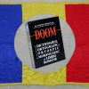

Baloane
Cum cresc taxele şi impozitele, provocând scumpiri şi falimente în lanţ, cum apar şi temele patriotarde. Deşi nu ţine de foame şi nici nu-i foarte sănătoasă, tărâţa naţionalistă se umflă simultan cu preţurile, oferind populaţiei un sac de box pentru nemulţumiri. O fi frigiderul gol, s-or fi scumpit ţigările, berea, energia, gazele, alimentele şi benzina, dar noi trebuie să ne apărăm sărăcia, nevoile şi mai ales neamul de agresorii simbolici care ne atacă taman în perioada majorărilor de biruri datorate statului şi administrate de către decidenţii politici.
La 1 februarie 2013, noul Cod Fiscal a introdus impozitul forfetar în agricultură, noi dări pentru companiile energetice, taxarea cu 3% a veniturilor microîntreprinderilor şi încă alte câteva măsuri cu efecte negative pentru economie. Tot atunci, finanţarea lucrărilor la tronsonul de metrou Drumul Taberei – Universitate a fost tăiată.
În tot acest timp, agenda publică era ocupată cu replicile defăimătoare ale britanicilor la adresa imigranţilor români, apoi cu dezbaterile despre fâlfâitul steagului secuiesc. Brusc şi intens, presa românească a constatat că imaginea noastră în Europa e dezastroasă, iar ungurii vor să cucerească Ardealul înfigând drapelul galben-bleu în tărâmul virgin al ţării. Fix în prima decadă a lunii februarie.
Patrioţi pe hârtie
Ciudat lucru, brigăzile patriotice indignate nu duc lipsă de recruţi. Urmaşii lui Pristanda s-au pus numaidecât pe numărat steaguri maghiare şi pe luat englezii la mişto. Când e vorba despre fudulie, ne credem cei mai iubitori de neam şi ţară. Ne mai scade entuziasmul războinic dacă apar şi responsabilităţile, iar dacă se iţeşte vreo treabă de făcut, “suntem cetăţeni europeni şi avem drepturi”.
Patriotismul neaoş e plin de contracţii:
- Deşi extrem de puţini concetăţeni se exprimă coerent în limba română, pe hârtie suntem plini de patrioţi. Fie că scriu “mi-au” ca pisica, fie că povestesc romglezeşte despre “boyfriend-ul lame, care la second date a fost so boooring, WTF!”, ai noştri se declară naţionalişti. Gaura din drapelul pe care-l flutură cu emfază e similară respectului pe care-l arată limbii lor;
- Avem nenumărate hârburi înmatriculate în Bulgaria (cu scopul meschin de a evita plata taxelor de poluare către statul român), dar şoferii lor spun că simt şi trăiesc în roşu, galben şi albastru, dorindu-şi investiţii în infrastructura rutieră. Banii ar trebui să vină de la bulgari, probabil;
- Aruncăm ambalaje, ţigări şi tot felul de gunoaie pe stradă, dar ne stropşim cu mânie patriotardă dacă vreun străin afirmă că România e insalubră;
- Zicem că “vrem o ţară ca afară“, dar ne burzuluim imediat ce instituţiile europene ne critică prin vreun raport. Obsesia ceauşistă a neamestecului în “treburili” interne ale României e refrenul salvator de câte ori vrem să ascundem sub preş corupţia, nepotismul sau ineficienţa;
- Abia aşteptăm ziua liberă de 1 Decembrie ca să ne batem pe fasolea cu ciolan patriotic,oferită de politicieni, din taxele plătite tot de noi. În schimb, la muncă voluntară în folosul comunităţii nu găseşti niciun doritor, fie că-i zi de sărbătoare sau lucrătoare. Totuşi, în statistici ne copleşeşte devotamentul faţă de ţară şi ne-am dori prosperitate.
Ce înseamnă patriotism?
Declarativ şi declamativ, românii sunt patrioţi. La televizor, în mediul virtual şi prin ziare sunt gata oricând să se ia la trântă cu agresorii sau opresorii străini. Când nu-i atacă nimeni, revin la ce ştiu mai bine: îşi fură singuri căciula, căutând vinovaţi imaginari prin vecini.
Patriotism înseamnă pragmatism şi sacrificiu individual, nu gargariseală bombastică şi naţionalism de paradă. Elveţienii sunt patrioţi autentici.


{kind=link}
{kind=link}
Comments on this entry are closed.